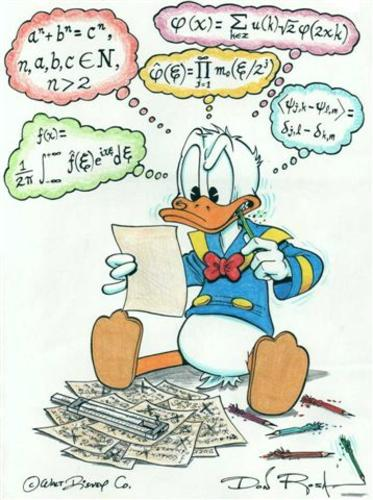
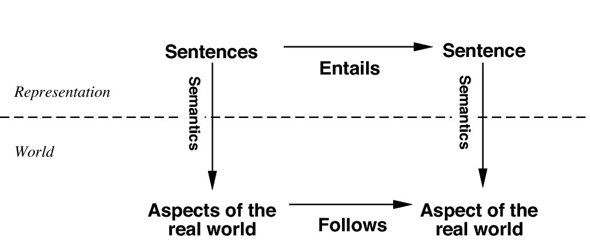
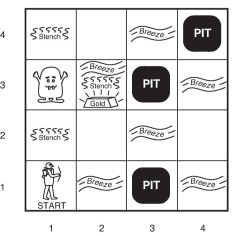
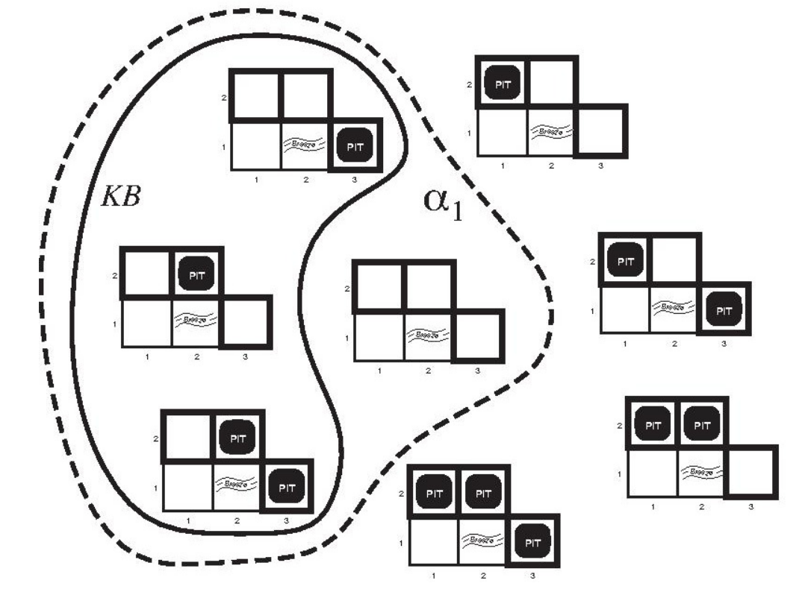
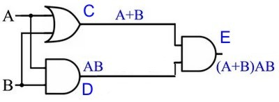
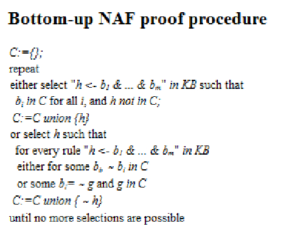

Inteligencia Artificial
Claudio Vaucheret
Agentes Lógicos
Created: 2022-09-05 lun 23:13
Agentes Basados en Conocimiento
IA Simbólica
| Idea El comportamiento inteligente puede ser generado en un sistema dándole al mismo: una representación simbólica de su ambiente y su comportamiento deseado y manipulando esta representación. | IA Simbólica  |
IA Simbólica

Agentes basados en Conocimiento
Idea
La inteligencia de los humanos puede obtenerse por procesos de razonamiento que operan sobre representación del conocimiento.
En IA, este enfoque hacia la inteligencia corresponde a los Agentes Basados en Conocimiento.
Características
- Pueden aceptar nuevas tareas en forma de metas descriptas explícitamente.
- Pueden adquirir competencias rápidamente o aprender nuevo conocimiento del ambiente.
- Pueden adaptarse a cambios en el ambiente, actualizando el conocimiento relevante.
Agentes basados en Conocimiento
El principal componente de un agente basado en conocimiento es su Base de Conocimientod (KB).
Contiene toda la información relevante del mundo que queremos representar.
Base de Conocimiento
- Es un conjunto de sentencias que representan hechos sobre el mundo.
- Algunas veces decimos que las sentencias son axiomas cuando se obtienen sin ser inferidas desde otras sentencias.
- Las sentencias son expresadas en un Lenguaje Formal de Representación de Conocimiento.
Agentes basados en Conocimiento
| Debe existir un modo de agregar nuevas sentencias a la KB y una forma de hacer consultas. | Inferencia |
Frame de un Agente basado en Conocimiento
¿Qué ejecuta el agente?
- Tell actualiza la KB con las percepciones del mundo
- Ask consulta a la KB qué acción debería ejecutar.
- El agente le indica a través de tell a la KB qué acción fue elegida y el agente ejecuta la acción.
Frame de un Agente basado en Conocimiento
agente(Percepcion, T, Accion):-
transf_Percep(P, T, S),
tell(S),
const_cons(T,QA),
ask(QA, A),
transf_Acción(A,T, S),
tell(S).
Interfaz con sensores y efectores
transf_Percep(Percepción, T, SentenciaP): contruye una sentencia con las percepciones del agente y el tiempo en que fue percibida.const_cons(T,QueryAcción): contruye una sentencia para consultar qué acciónd ebería ser hecha en un tiempo dado.transf_Acción(Acc,T, SentenciaA): contruye una sentencia que indica que la acción elegida fue ejecutada.
Agente basado en Conocimiento
Puede describirse a:
- Nivel de Conocimiento: especificamos solamente lo que el agente conoce y cuál es su objetivo, para fijar su comportamiento.
- Nivel de Implementación: Estructuras de datos utilizadas en la KB y los algoritmos que la implementan.
Representemos en un lenguaje que sepamos todos :)
Construyamos un agente basado en Datalog
¿KB?
¿Máquina de Inferencia?
Wumpus
| Wumpus___________________  | Un agente que está en una cueva, debe encontrar el oro y volver a la salida lo más rápido posible (vivo, claro :) El inconveniente es que hay pozos y un horrible monstruo, el Wumpus:( El agente muere miserablemente si entra en un cuadro que contiene un pozo o si en el cuadro está el Wumpus vivo. |
Wumpus
| Wumpus___________________ | El agente dispone de una sola flecha para matar al Wumpus. Si dispara y tiene la flecha, la flecha se detiene en la pared o en el Wumpus (a quien mata). Si dispara sin flecha no hay efecto. En los cuadros adyacentes (alcanzables por el agente; esto es no se consideran adyacentes los cuadros en diagonal) a un pozo se percibe una brisa, en los adyacentes al Wumpus un hedor y en el cuadro que contiene el oro, brillo. |
Wumpus PEAS
| Wumpus___________________ | Medida de Performance Oro +1000, Muerte -1000 -1 por pasos, -10 por usar la flecha Ambiente Es una matriz de \(4\times 4\). El agente siempre comienza en el cuadrado etiquetado con \([1,1]\) orientado hacia la derecha. Los objetos son ubicados en forma aleatoria. Los cuadros adyacentes al Wumpus son olorosos. En cuadros adyacentes a un pozo se percibe una brisa y el cuadro que contiene el oro es brilloso. |
Wumpus PEAS
| Wumpus___________________ | Acciones Forward, TurnLeft o TurnRight en 90\(º\). Shoot: Disparar mata al Wumpus si lo está enfrentando y utiliza la única flecha que tiene el agente. Si no tiene flecha, la acción no tiene efecto. Si en la trayectoria no está el Wumpus, la flecha choca contra la pared. Climb: sale de la cueva. Solo se puede ejecutar desde la posición [1,1]. |
Wumpus PEAS
| Wumpus___________________ | Sensores Hedor: cuadros adyacentes (no en diagonal) al Wumpus. Brisa: cuadros adyacentes a un pozo. Brillo: cuadro donde está el oro. Golpe: si avanza hacia una pared. Grito: si mata al Wumpus. Se siente en cualquier lugar de la cueva. |
Máquinas de Inferencia para Lenguajes de la Lógica
Chequeo de Modelos
Algoritmo SAT. Algunas mejoras: heurística de la cláusula unitaria y símbolos puros.
Algoritmos de búsqueda local: WalkSAT
Asigna en forma aleatoria valores de verdad a las variables proposicionales. Si esa asginación es modelo, termina. Sino elige en forma random una de las cláusulas de las cláusulas falsas. Cambia con probabilidad p el valor en el modelo encontrado de alguna de los símbolos proposicionales que hacen falsa a la cláusula y con probabilidad (1-p) cambia el símbolo de cláusula que maximiza el número de cláusulas satisfechas.
Wumpus: Model Checking

Observando que no hay nada en [1,1] y que hay brisa en [2,1] los modelos para determinar dónde hay un pozo son los rodeados por la línea gruesa. Nótese que en [1,2] no puede haber pozo ya que en [1,1] no hay brisa.
\[\therefore KB \cup Observaciones\models [1,2] \mbox{ es seguro}\]
Conocimiento No Definido
Restricciones de Integridad
Restricción de Integridad: Aplicaciones
Diagnóstico basado en consistencia
- Considere un sistema del que tenemos la descripción de cómo debería funcionar.
- Si el sistema no funciona de acuerdo a las especificaciones podemos probar no solamente que no funciona sino también podemos identificar los componentes que se rompieron.
Diagnóstico basado en consistencia

\[false \leftarrow on(a) \wedge on(b) \wedge off(e)\]
Si está on(a) y on(b) y off(e), ¿qué podemos concluir?
Restricción de Integridad: Aplicaciones
- Restricciones que el diseñador de una base de datos conoce y que no deberían violarse jamás.
- En la base de estudiantes de una universidad, no podría ocurrir que un alumno tuviera diferentes notas de aprobación del mismo curso
\(false \leftarrow nota(Estudiante,Curso, Nota1) \wedge\) \(nota(Estudiante,Curso, Nota2) \wedge\) \(Nota1\neq Nota2\)
Restricciones de Integridad
- Nos ayuda a conservar la consistencia en los datos.
- No es posible que una luz esté prendida y apagada
- false \(\leftarrow\) prendida(L) \(\wedge\) apagada(L)
- ¿Cuál es el valor de verdad de esta cláusula si la luz estuviera prendida y apagada?
- Las restricciones de integridad permiten probar que una conjunción de átomos es falsa en todos los modelos.
RI:Representación del Conocimiento
Restricción de Integridad
Es una cláusula de la forma
\[false \leftarrow a_1\wedge\ldots \wedge a_k.\] donde \(a_i\) son átomos y false es un átomo especial que es falso en todas las interpretaciones.
Claúsulas de Horn
Es una cláusula de definida o una restricción de integridad.
Restricción de Integridad
Ejemplo: Introduce negación
Sea el conjunto de cláusulas T1:
false \(\leftarrow\) a \(\wedge\) b.
a \(\leftarrow\) c.
b \(\leftarrow\) c.
¿Qué valor de verdad tiene c?
\(T1\models \neg c\) o equivalentemente c es falso en todos los modelos de T1.
Restricción de Integridad
Ejemplo: Respuestas disyuntivas
Sea el conjunto de cláusulas T2:
false \(\leftarrow\) a \(\wedge\) b.
a \(\leftarrow\) c.
b \(\leftarrow\) d.
b \(\leftarrow\) e.
¿Qué podremos concluir?
\(T2\models \neg c \vee \neg d\) y \(T2\models \neg c \vee \neg e\)
Suposición de Conocimiento Completo
Suposición de Conocimiento Completo
Conocimiento Completo
- El conocimiento del agente sobre el mundo es completo.
- ¿Y entonces….?
- Todas las cosas relevante sobre el mundo, el agente lo conoce
Conocimiento Completo
No Monotonicidad
- Considere un listado de los horarios de colectivo de Nqn a Allen.
- Si no hay colectivos en el listado que salgan entre las 13:00hs y las 15:00hs, concluimos que no podemos viajar a Allen en ese rango de horario.
- Si luego agregan una línea que sale a las 14:45, entonces podemos concluir que podemos viajar en ese rango de horario (entre las 13 y las 15).
Conocimiento Completo
CWA: Closed World Assumption
Permite asumir a un agente que un hecho es falso si no puede inferir que es verdad.
NAF: Negación por Falla
Conocimiento Completo
\(a \leftarrow B1\)
\(a \leftarrow B2\)
\(\vdots\)
\(a \leftarrow BN\)
\[a\leftarrow B1\vee \ldots \vee BN.\]
y la suposición de conocimiento completo nos permite concluir que
\[a\rightarrow B1\vee \ldots \vee BN.\]
Conocimiento Completo
Completamiento de Clark
\[a\leftarrow B1\vee \ldots \vee BN.\] \[a\rightarrow B1\vee \ldots \vee BN.\] Luego
\[a\leftrightarrow B1\vee \ldots \vee BN.\]
Esto se hace para todos los predicados. Si el predicado W no aparece en ninguna cabeza de cláusula, entonces el completamiento de Clark de W es\[W\leftrightarrow false\]
CK: Razonamiento Bottom-up

CK: Razonamiento Bottom-up
\(p \leftarrow q \wedge \sim r\).
\(p \leftarrow s\).
\(q \leftarrow \sim s\).
\(r \leftarrow \sim t\).
\(s \leftarrow w\).
\(t\).
¿Qué devuelve C?
CK: Razonamiento Top-down
Negación por falla.
\(p \leftarrow q \wedge \sim r\).
\(p \leftarrow s\).
\(q \leftarrow \sim s\).
\(r \leftarrow \sim t\).
\(s \leftarrow w\).
\(t\).
¿Qué devuelve ?p?
¿Qué devuelve ?w?
CK: Razonamiento Top-down
Problemas con las variables libres:
\(p(X) \leftarrow \sim q(X) \wedge\) r(X)$.
\(q(a)\).
\(q(b)\).
\(r(d)\).
¿Tiene respuesta ?p(X) ?
Solución: retrasar la NAF de las metas con variables libres hasta que se liguen.
Bibliografía
Referencia Bibliográfica
 S. Russell y P.Norvig
Artificial Intelligence: A Modern Approach (Third Edition).
Capítulo 7 (hasta la sección 7.7.1 inclusive)
2009
S. Russell y P.Norvig
Artificial Intelligence: A Modern Approach (Third Edition).
Capítulo 7 (hasta la sección 7.7.1 inclusive)
2009
D. Poole, A. Mackworth y R. Goebel
Computational Intelligence: A Logical Approach.
Capítulo 7: Seccion 7.3 hasta Razonamiento (no lo incluye)
Seccion 7.4 completa
1998